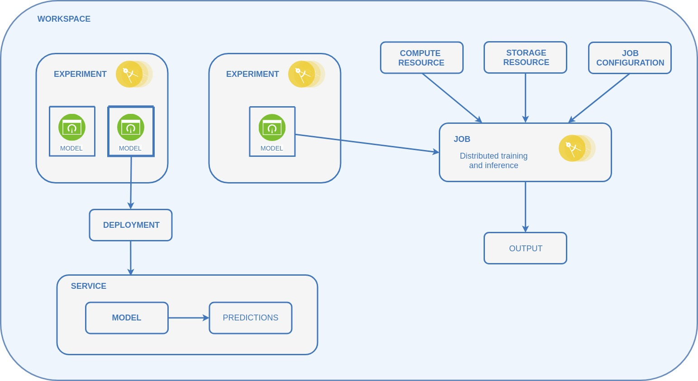

SKIL core concepts
To get started with SKIL, you should know about a few core concepts of it. Here's a bird's eye view of what SKIL does. We'll go through each concept quickly one by one. Most concepts should feel familiar, as they come up naturally in most data science workflows.

- Workspaces: Whatever you do with SKIL, you start with a
WorkSpace. It's a collection of all the work that belongs together. This could be all the work your department does, a one-off project you're tackling, or all experiments you conducted on a specific topic. You can freely choose how to scope your workspaces. - Experiments: Once you have a workspace to work with, the next step is to create an
Experimentin it. An experiment is what you inuitively might think it is: a data science experiment, in which you can explore data, prototype models, visualize outcomes etc. If you like, you can think of an experiment as a notebook that collects your work session (and in fact the SKIL UI equips each experiment with a notebook for you out of the box). You can create unlimited experiments within a workspace. - Models: If you're happy with an experiment, you usually want to take the next step and productionize your work. The SKIL
Modelconcept helps you do that. SKIL currently support TensorFlow, Keras and DL4J models asModel. Putting a model to production can mean several things. You either want to do scale-out, production grade training on a cluster or deploy your model as a service (training or inference), tasks you can't do on your local machine. SKILModels are the basis for each of these production steps. - Deployments: Let's say you have conducted one or several experiments, found a model that's a clear winner and want to get it to production quickly. You do this by creating a SKIL
Deploymentand deploy yourModel. - Services: A deployed model is a
Service. SKIL offers several services, depending on what you want to deploy (e.g. only a model, only a pre-processing step, a pipeline consiting of several transforms and a models etc.). For now the only thing you need to know is that a service takes your work and puts it into a production-grade service that you and your team can easily use to get predictions (inference). - Jobs: If, instead of deploying a trained model, you want to run a training job that scales out model training on a massive dataset using Apache Spark, a SKIL
Jobis what you want. To run a training job you need to specify where the data is, what your compute resources are and how you want to distribute training (relating to the last three concepts we will cover here). Training jobs will usually produce an output for you and will result in trained models that you can deploy as service, exactly as described before. It is also possible to run distributed inference jobs, in case you have massive amounts of data that needs to pass through a trained model. That's also possible with SKIL, and works pretty much the same way as setting up a training job. - Distributed job configuration: Running a model locally and running it distributed on Spark can be very different. A
DistributedConfigurationspecifies how exactly your model should be distributed (for instance whether to use parameter averaging or sharing). - Compute resources: Tells a job what compute capabilities it can use. A
ComputeResourcecan for instance be AWS Elastic Map Reduce (EMR), Google Cloud DataProc, Azure HDInsight, or any Spark cluster that you might have on premise. - Storage resources: Tells a job where the data it uses is located. A
StorageResoucecould be an Azure container, Google cloud storage, Amazon S3 or HDFS.